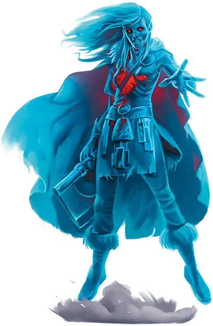

Воин призраков меча
Sword Wraith Warrior
Средняя Нежить, законно-злая

Класс Доспеха 16 (кольчужная рубаха, щит)
Хиты 45 (6к8 + 18)
Скорость 30 футов
| мод | спас | ||
|---|---|---|---|
| СИЛ | 18 | +4 | +4 |
| ЛОВ | 12 | +1 | +1 |
| ТЕЛ | 17 | +3 | +3 |
| мод | спас | ||
|---|---|---|---|
| ИНТ | 6 | −2 | −2 |
| МДР | 9 | −1 | −1 |
| ХАР | 10 | +0 | +0 |
Сопротивление урону некротическая энергия; дробящий, колющий, рубящий от немагических атак
Иммунитет к урону яд
Иммунитет к состояниям отравление, испуг, истощение, бессознательность
Чувства тёмное зрение 60 футов, пассивное Восприятие 9
Языки Все, известные при жизни
Опасность 3 (700 опыта)
Бонус мастерства +2
Среда обитания Болото, Луг
Особенности
Смертельная ярость. Призрак меча может совершить одну атаку оружием бонусным действием, причиняя ею дополнительно 9 (2к8) урона некротической энергией в случае попадания. Если призрак совершит это, то все броски атак против него будут совершаться с преимуществом до начала его следующего хода.
Действия
Длинный меч. Рукопашная атака оружием: +6 к попаданию, досягаемость 5 футов, одна цель. Попадание: 8 (1к8 + 4) рубящего урона, или 9 (1к10 + 4) рубящего урона, если используется двумя руками.
Длинный лук. Дальнобойная атака оружием: +3 к попаданию, дистанция 150/600 футов, одна цель. Попадание: 5 (1к8+1) колющего урона.
Описание
Призрак меча.Когда воин, одержимый славой, без почтения погибает в битве, его доблестный дух может превратиться в призрак меча, что обитает в полях битвы.
Погружённые в раздумья духи. Зачастую, места, в которых можно встретить призраков меча являются местом действия древних засад, поля битв, где от магии пали солдаты, не имеющие шансов дать ей отпор, и те места, где противники были окружены и беспощадно перебиты.
Честь превыше всего. Призраки меча впадают в ярость, если кто-либо сомневается в их доблести. В то же время, их можно с лёгкость задобрить, если хвалить. Высшее удовольствие для них, слушать баллады, исполняемые в их честь. Города, что расположены возле прошедших полей битв, проводят ежегодные фестивали в честь погибших воинов, чтобы сдерживать и успокаивать призраков меча.
Природа нежити. Призрак меча не нуждается в воздухе, пище, питье и сне.